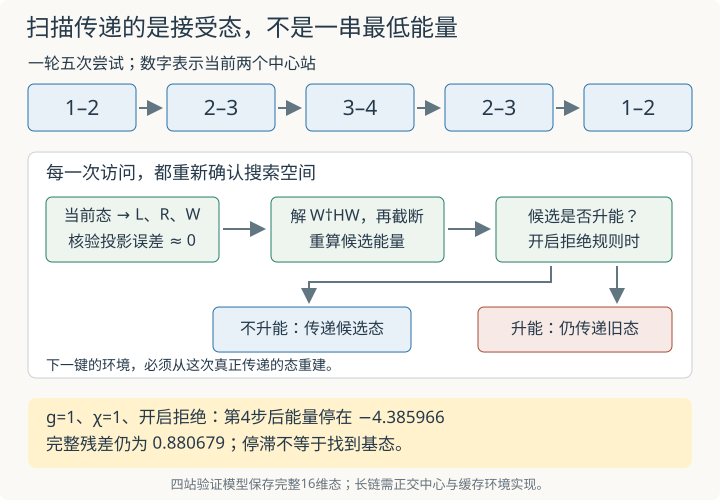

本页目录
基础衔接 11 · 两站点往返扫描：每一步到底接受了哪个态？
先修：MPS 环境递推、两站点更新与截断。本讲把一次更新接成四站链的完整往返，动态重建左右块基，并逐步记录接受或拒绝。为了能与完整物理态逐项对账，实验显式保存 16 维态；这是验证规模的扫描实现，尚不是面向长链的高效 MPS／MPO 程序。
1. 会更新一条键，为什么还没有学会扫描？
上一讲固定左右块，只改变中心两站。移动到下一条键以后，左右块包含的站变了，刚接受的新态也可能产生新的 Schmidt 方向。如果继续使用旧环境，求解器即使给出很小的局部残差，也可能在错误的空间里求解。
还需要回答另一个问题：求解后截断的候选若升能，接下来是沿用候选还是回到旧态？这会改变下一步的环境，因而改变后面的整个轨迹。扫描不能只是一串各自正确的局部最低本征值。
本页沿用开放 Ising 模型
Pauli 本征值 ±1，能量单位 J=1。初态固定为
每站 Bloch 极角为 60°，所以 ⟨X⟩=sin60°、⟨Z⟩=cos60°，初态能量为
χ 是所有三条键的维数上限。本页 χ=1 会一直保留全链乘积态；上一讲只约束中间键，其保留数 r=1 并没有同样的含义。
2. 从当前态重建当前块基
考虑中心为 j、j+1，j∈{1,2,3}。左块是站 1…j−1，右块是站 j+2…4。将当前归一化态按任意切口 k 重排成矩阵
对该切口做 Schmidt 分解。\(P^{(k)}(P^{(k)})^\dagger\) 的非零本征向量给出左块支撑的正交基；\((P^{(k)})^\dagger P^{(k)}\) 的本征向量在实数实验中给出右块正交基。若使用一般复振幅，右 Schmidt ket 的系数应取后者本征向量的复共轭，不能把实数实现直接当作复数实现。
在中心左边的切口取左块基 L，在中心右边的切口取右块基 R。它们分别有 d_L、d_R 个方向，空块只有一个单位基矢。于是
λ、η 表示左右块的完整物理配置，ℓ、ρ 表示保留的块方向，s、t 表示两个中心站。W 有 16 行、4d_Ld_R 列，并满足
第二式表示当前态就在当前可搜索空间内。两侧支撑投影作用于不同物理块，彼此对易；它们各自都保留当前态，因此联合作用也保留当前态。这是未截断局部求解不升能的重要前提。
数值实验只保留约化密度矩阵权重大于 10⁻¹² 的方向，并直接检查当前态的投影误差。它不主动补齐零权重方向，所以局部空间会从初态的最小支撑逐步增长；该阈值是数值规则，不是物理定律。
3. 更新的是态，也必须更新环境
当前中心问题为
在本页的实模型中 † 可写成 T。求得最低本征向量后，按 (ℓ,s)|(t,ρ) 重排成 2d_L×2d_R 矩阵，SVD 后最多保留 χ 项，归一化得到候选态
本次丢弃权重 ε 的定义与上一讲相同。再把候选放回完整 H，计算 \(E_{\rm cand}=\langle\psi_{\rm cand}|H|\psi_{\rm cand}\rangle\)。不要把未截断的 E_* 当成候选态的能量。
这一步只改变中心与其内部键。外部块仍被限制在原来的支撑内，所以外侧两条切口的秩不会超过旧值；内部切口的秩由 SVD 压到 χ 以下。因此若旧态满足全部键的上限，新候选也满足。
程序在每一次更新后，从实际接受的态重新做第 2 节的分解。这相当于重新确认正交块基与投影环境。在长链实现中，会通过移动 MPS 正交中心、递推并缓存 G/K/C 或 MPO 环境来避免指数大的全态；本页显式构造 W，是为了让“环境与当前态一致”可以直接验证。

4. 给接受规则一个明确含义
关闭拒绝规则时，下一步直接使用归一化候选。开启时，本实验只在
时接受，否则保留旧态。容差容纳浮点舍入，所以这里只要求容差内不升能。拒绝后，下一步必须从旧态重建块基；不能一边保存旧能量，一边偷偷沿用候选的环境。
一轮的键序列定义为
共有五次尝试；下一轮重复这一序列，所以轮与轮相接时会连续访问 (1,2)。这是本页采用的计数约定，并不要求每次访问都产生不同物理态。
每一步都记账：旧态能量 E_old、未截断局部最低能量 E_*、归一化候选能量 E_cand、接受决定与本次 ε。接受态的能量才是下一步的起点。下方图线连接的是离散更新记录，不代表连续时间动力学。
5. 默认账本：环境空间真的在变化
默认 g=1、χ=2、两轮、开启拒绝规则。初态所有切口秩均为 1，所以第一步局部空间只有 4 维。更新后第一站出现两个 Schmidt 方向，第二步变成 8 维；等另一端也获得第二个方向，首次回程的中间键问题才达到 16 维。
| 第一轮步骤 | 更新键 | 局部维数 | 未截断 E_* | 截断后 E_cand |
|---|---|---|---|---|
| 1 | 1–2 | 4 | −4.379121081 | −4.379121081 |
| 2 | 2–3 | 8 | −4.420439118 | −4.420439118 |
| 3 | 3–4 | 8 | −4.746616151 | −4.746616151 |
| 4 | 2–3 | 16 | −4.758770483 | −4.758517166 |
| 5 | 1–2 | 8 | −4.758521165 | −4.758521165 |
第四步与上一讲的完整中心问题相接：未截断时到达精确基态，但 χ=2 的压缩会产生 ε≈4.206958×10⁻⁵。第二轮的中间键候选再次回到 −4.758517166，比当时已接受的态略差，于是被拒绝；其他键仍可能继续改善环境。
两轮结束的默认结果：
| 量 | 结果 |
|---|---|
| 最终接受态能量 | −4.758525601 |
| 完整四站基态 | −4.758770483 |
| 剩余能量差 | 0.000244882 |
| 完整物理残差 | 0.037738490 |
| 拒绝次数 | 2 / 10 次尝试 |
先看默认账本，再固定 g=1 将 χ 调成 1，并比较拒绝规则的开关。最后把 χ 调到 4，观察完整残差是否到达舍入尺度。调节“往返轮数”会从同一个初态重跑，不会接着上一次滑块状态继续运行。
无脚本参照：g=1、χ=1、两轮，开启拒绝时 E=−4.385966247、残差0.880679105、拒绝4次；关闭时 E=−4.374571868、残差0.941605546。χ=4、两轮时 E=−4.758770483，残差在舍入尺度。默认 χ=2 结果见上表。
6. 单调、停滞、收敛是三件事
g=1、χ=1、开启拒绝规则时，第 4 步以后物理态停在能量约 −4.385966247，延长到五轮也没有解决问题：完整残差仍约 0.880679105。部分访问给出同一物理态，其他访问给出升能候选而被拒绝。拒绝规则只保证接受轨迹不明显升能，没有保证跳出受限搜索与截断造成的停滞。
关闭拒绝规则后，能量可能上升或在相近候选间来回变化；这同样不能被称为收敛。单调有下界的能量序列至多保证能量值有极限，不能仅凭这一点证明态收敛，更不能证明极限是完整系统的基态。
本页 χ=4 已允许四站所有切口的最大秩，且实际扫描在第一轮第 4 步遇到完整 16 维搜索空间，因而本模型可到达精确基态。这是具体模型和这条轨迹的验证结果，不能推广成任意初态、任意 Hamiltonian 的全局收敛定理。有限轮算法随 χ 改变也会改变搜索路径，不能把理想变分家族的包含关系直接当成每次有限运行的单调性保证。
最终至少同时看：接受能量的变化、完整残差、增加 χ 后的变化，以及不同初态的结果。实验固定一个初态，尚未完成初态敏感性分析。残差为零说明某个本征态；仍需能量或其他证据判断它是不是基态。
7. 为什么不能把所有 ε 相加当作最终误差？
ε 比较的是某一步未截断优化态与该步的压缩候选，不是候选与精确全局基态。下一次的环境又依赖真正接受的态，优化过程通常是非线性的。因此不同尝试的 ε 不能直接拼成一次全局保真度公式。
本实验的“单步最大丢弃权重”也包括被拒绝的候选，用来监控压缩压力。一个被拒绝的候选可以有正 ε，但实际接受态完全没变。累积这些 ε，甚至会在相同物理态上不断增大。要控制多次近似的整体误差，需要明确比较哪两条演化或优化轨迹，并证明每步映射具有怎样的误差传播性质。
8. 两道迁移题
题一。 默认第一步更新 1–2 后，左端单站的 Schmidt 秩从 1 变为 2，而右端第四站仍只有一个方向。更新 2–3 时局部空间应是多少维？为什么不能把第一步的 W 原样拿来用？
先重新划分左右块，再数坐标
新的左块是站 1，d_L=2；新的右块是站 4，d_R=1。两个中心物理指标各为 2，所以局部维数为 2×2×2×1=8。上一块 W 描述的是中心站 1、2，右块为站 3、4，只有 4 列；它的分块含义和列空间都不同。维数变大来自新态已经产生的 Schmidt 支撑，不是凭空增加自由度。
题二。 某次候选的 ε=0.02，但因为能量升高被拒绝。能否说这一步让最终接受态损失了 2% 保真度？若相同候选被反复拒绝五次，是否损失了 10%？
分清候选的压缩误差与实际状态变化
都不能。ε=0.02 是未截断局部优化态与归一化候选之间的保真度损失。候选被拒绝后，实际接受态仍是旧态，所以这一次实际状态变化为零，相对旧态的保真度仍为 1。重复拒绝也不会累计出物理态的损失。它说明压缩与接受规则发生冲突，值得调整键维或优化策略；没有给出接受态离全局基态多远的答案。
速查与下一步
每次以接受态重建左右块基 → 核验旧态在搜索空间内 → 解投影本征问题 → 截断并归一化 → 重算候选能量 → 接受或拒绝 → 移到下一键。一次往返覆盖所有键，不等于全局收敛证明。
算法背景见 Schollwöck 的 MPS 综述，第 6 节与 两站点 DMRG 步骤。本页用独立 NumPy SVD 实现对照逐步轨迹，JavaScript 通过约化密度矩阵提取实块基；它们都使用同一明示的四站 Hamiltonian。下一步才是取消全态存储、实现缓存环境和迭代算符作用，以及更长链上的误差与初态敏感性训练。资料核查：2026-09-08。